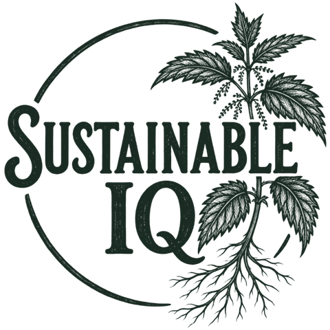

I.
Clarity before commitment
Understand the obligation, cost, data and options before signing a contract or buying a solution.

Rooted in Northwest ArkansasSustainable IQ helps people and organizations navigate complex environmental decisions and brings practical self-reliance to everyday life. Different settings. One belief: understanding creates independence.
 A rooted approach to lasting value
A rooted approach to lasting valueWhether you're responding to a new reporting requirement or choosing a tool for your home, the best decision starts with knowing what you need, what you don't, and what you can keep.
Understand the obligation, cost, data and options before signing a contract or buying a solution.
Protect materials, money, resources and effort by choosing approaches that hold up over time.
Build the understanding, evidence and everyday skills to make choices on your own terms.

Sustainable IQ brings the same spirit of independence to both organizational decisions and useful objects for daily living.
The advisory practice helps clients see through complex requirements, keep control of projects and document sound decisions. The market booth celebrates durable things, practical skills, growing food and owning what you use.
We don't begin with a product to sell. We begin with the decision you need to make.
Greenhouse gas inventory quality, supplier and value-chain requirements, packaging and EPR exposure, funding pathways, project scoping and assurance-ready evidence.
Explore consulting workFunctional old tools, growing supplies, traditional kitchenware, records, botanical goods and preparedness essentials. Sourced with a preference for use, longevity and independence.
See the booth conceptFrom municipal and supplier obligations to evidence systems and practical projects, we're interested in the problems where independent judgment can make a real difference.

Sustainable IQ · Northwest ArkansasOr find our market presence at Time Travelers Market, 1305 W. Walnut Street, Rogers, Arkansas, once the market opens.